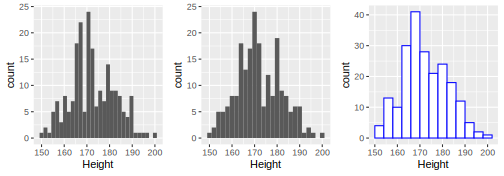
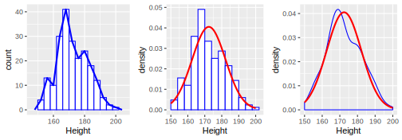
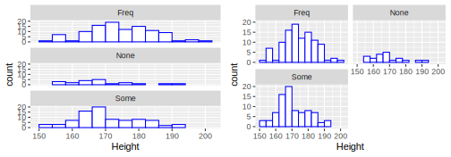
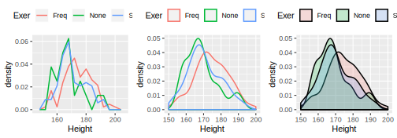
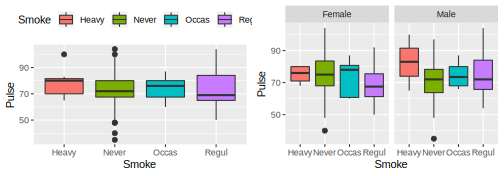
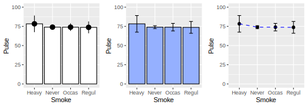
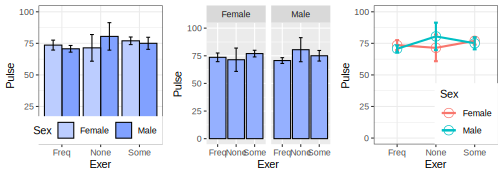
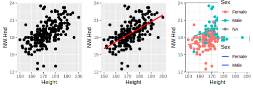
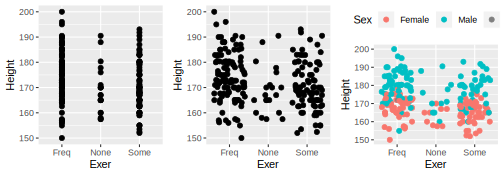

7.2 A modern grafika (ggplot2)
- feladat. Hisztogram.
Rajzoljunk hisztogramot a MASS csomag survey adattáblájának Height oszlopára! Vessük össze a normális eloszlás sűrűségfüggvényével is!
7.2.1 Hisztogram rajzolása
data(survey, package = "MASS") # a survey beolvasása
library(ggplot2)
library(gridExtra)
# p1 - alapértelmezett hisztogram
p1 <- ggplot(data=survey, aes(x=Height)) + geom_histogram()
# p2 - hisztogram: binwidth=2
p2 <- ggplot(data=survey, aes(x=Height)) + geom_histogram(binwidth=2)
# p3 - hisztogram: binwidth=4 és színek beállítása
p3 <- ggplot(data=survey, aes(x=Height)) +
geom_histogram( binwidth=4, colour = "blue", fill = "white")
# a fenti ábrák megjelenítése
grid.arrange(p1, p2, p3, ncol=3)
7.2.2 Gyakorisági poligon, simított hisztogram és összevetés a normális eloszlás sűrűségfüggvényével
data(survey, package = "MASS") # a survey beolvasása
library(ggplot2)
library(gridExtra)
# p1 - hisztogram és gyakorisági poligon
p1 <- ggplot(data=survey, aes(x=Height)) +
geom_histogram(colour = "blue", fill = "white", binwidth=4) +
geom_freqpoly(binwidth = 4, size=1, colour="blue")
# p2 - hisztogram és a normális eloszlás sűrűségfüggvénye
p2 <- ggplot(data=survey, aes(x=Height)) +
geom_histogram(aes(y = ..density..), colour="blue", fill="white", binwidth=4) +
stat_function(fun=dnorm, args = list(mean=mean(survey$Height, na.rm=T),
sd=sd(survey$Height, na.rm = T)),
colour="red", size=1)
# p3 - simított hisztogram és a normális eloszlás sűrűségfüggvénye
p3 <- ggplot(data=survey, aes(x=Height)) +
geom_density(colour="blue") +
stat_function(fun=dnorm, args = list(mean=mean(survey$Height, na.rm=T),
sd=sd(survey$Height, na.rm = T)),
colour="red", size=1)
# a fenti ábrák megjelenítése
grid.arrange(p1, p2, p3, ncol=3)
- feladat. Hisztogram csoportokra.
Rajzoljunk hisztogramot a MASS csomag survey adattáblájának Height oszlopára az Exer különböző csoportjaiban!
7.2.3 Hisztogram csoportokra
data(survey, package = "MASS") # a survey beolvasása
library(ggplot2)
library(gridExtra)
# p1 - hisztogramok egymás alá
p1 <- ggplot(data=survey[!is.na(survey$Exer),], aes(x=Height)) +
geom_histogram(colour = "blue", fill = "white", binwidth=4) +
facet_wrap(~ Exer, nrow = 3)
# p2 - hisztogramok táblázatszerűen
p2 <- ggplot(data=survey[!is.na(survey$Exer),], aes(x=Height)) +
geom_histogram(colour = "blue", fill = "white", binwidth=4) +
facet_wrap(~ Exer, nrow = 2)
# a fenti ábrák megjelenítése
grid.arrange(p1, p2, ncol=2)
7.2.4 Gyakorisági poligon és simított hisztogram csoportokra, de egy ábrán
data(survey, package = "MASS") # a survey beolvasása
library(ggplot2)
library(gridExtra)
# p1 - gyakorisági poligonok egy ábrán
p1 <- ggplot(data=survey[!is.na(survey$Exer),], aes(x=Height, y=..density.., colour = Exer)) +
geom_freqpoly(binwidth = 4, size=0.7) + theme(legend.position="top")
# p2 - simított hisztogramok egy ábrán
p2 <- ggplot(data=survey, aes(x=Height, colour = Exer)) + geom_density(size=0.7) +
theme(legend.position="top")
# p3 - simított hisztogram kitöltéssel egy ábrán
p3 <- ggplot(data=survey, aes(x=Height, fill = Exer)) + geom_density(alpha=0.2, size=0.7) +
theme(legend.position="top")
# a fenti ábrák megjelenítése
grid.arrange(p1, p2, p3, ncol=3)
- feladat. Dobozdiagram.
Rajzoljunk hisztogramot a MASS csomag survey adattáblájának Pulse oszlopára a Smoke egyes csoportjaiban, valamint vegyük figyelembe a Sex változó értékeit is!
data(survey, package = "MASS") # a survey beolvasása
library(ggplot2)
library(gridExtra)
# p1 - dobozdiagram a Smoke csoportjaira
p1 <- ggplot(data=survey[!is.na(survey$Smoke),], aes(x=Smoke, y=Pulse, fill=Smoke)) +
geom_boxplot() + theme(legend.position="top")
# p2 - dobozdiagram a Smoke csoportjaira a Sex figyelembevételével
p2 <- ggplot(data=survey[!is.na(survey$Smoke) & !is.na(survey$Sex),],
aes(x=Smoke, y=Pulse, fill=Smoke)) +
geom_boxplot() + guides(fill=FALSE) + facet_wrap(~ Sex, nrow = 1)
# a fenti ábrák megjelenítése
grid.arrange(p1, p2, ncol=2)
- feladat. Átlagok ábrázolása.
Rajzoljunk hisztogramot a MASS csomag survey adattáblájának Height oszlopára!
7.2.5 Átlagok egy faktor esetén
data(survey, package = "MASS") # a survey beolvasása
library(ggplot2)
library(gridExtra)
# p1 - oszlopdiagram az átlagokra 95%-os konfidencia intervallummal I.
p1 <- ggplot(data=survey[!is.na(survey$Smoke),], aes(x=Smoke, y=Pulse)) +
stat_summary(fun.y=mean, geom="bar", fill="white", colour="black") +
stat_summary(fun.data=mean_cl_normal, geom="pointrange") +
coord_cartesian(ylim = c(0, 100))
# p2 - oszlopdiagram az átlagokra 95%-os konfidencia intervallummal II.
p2 <- ggplot(data=survey[!is.na(survey$Smoke),], aes(x=Smoke, y=Pulse)) +
stat_summary(fun.y=mean, geom="bar", fill="#95b0ff", colour="black") +
stat_summary(fun.data=mean_cl_normal, geom="errorbar", width=0.2) +
coord_cartesian(ylim = c(0, 100))
# p3 - vonaldiagram az átlagokra 95%-os konfidencia intervallummal
p3 <- ggplot(data=survey[!is.na(survey$Smoke),], aes(x=Smoke, y=Pulse)) +
stat_summary(fun.y=mean, geom="point") +
stat_summary(fun.y=mean, geom="line", aes(group=1), colour="blue", linetype="dashed") +
stat_summary(fun.data=mean_cl_normal, geom="errorbar", width=0.2) +
coord_cartesian(ylim = c(0, 100))
# a fenti ábrák megjelenítése
grid.arrange(p1, p2, p3, ncol=3)
7.2.6 Átlagok két faktor esetén
data(survey, package = "MASS") # a survey beolvasása
library(ggplot2)
library(gridExtra)
# p1 - oszlopdiagram az átlagokra 95%-os konfidencia intervallummal I.
p1 <- ggplot(data=survey[!is.na(survey$Exer) & !is.na(survey$Sex),],
aes(x=Exer, y=Pulse, fill=Sex)) +
stat_summary(fun.y=mean, geom="bar", position="dodge", colour="black") +
stat_summary(fun.data=mean_cl_normal, geom="errorbar",
position=position_dodge(width=0.90), width=0.2) +
scale_fill_manual("Sex",values = c("Female"="#bccdff", "Male"="#81a1ff")) +
coord_cartesian(ylim = c(0, 100)) + theme_bw() +
theme(legend.justification=c(1,0),legend.position=c(1,0),
legend.direction="horizontal")
# p2 - oszlopdiagram az átlagokra 95%-os konfidencia intervallummal II.
p2 <- ggplot(data=survey[!is.na(survey$Exer) & !is.na(survey$Sex),],
aes(x=Exer, y=Pulse)) +
stat_summary(fun.y=mean, geom="bar", fill="#95b0ff", colour="black") +
stat_summary(fun.data=mean_cl_normal, geom="errorbar", width=0.2) +
coord_cartesian(ylim = c(0, 100)) +
facet_wrap(~ Sex, nrow = 1)
# p3 - vonaldiagram az átlagokra 95%-os konfidencia intervallummal
p3 <- ggplot(data=survey[!is.na(survey$Exer) & !is.na(survey$Sex),],
aes(x=Exer, y=Pulse, colour=Sex)) +
stat_summary(fun.y=mean, geom="point", size=3, shape=21, fill="white") +
stat_summary(fun.data=mean_cl_normal, geom="line", size=1, aes(group=Sex)) +
stat_summary(fun.data=mean_cl_normal, geom="errorbar", size=1, width=0.1) +
coord_cartesian(ylim = c(0, 100)) +
theme_bw() + theme(legend.justification=c(1,0),legend.position=c(1,0))
# a fenti ábrák megjelenítése
grid.arrange(p1, p2, p3, ncol=3)
- feladat. Kétdimenziós pontdiagram.
Rajzoljunk kétdimenziós pontdiagramot a MASS csomag survey adattáblája alapján a Height és NW.Hnd változók kapcsolatára. Vegyük figyelembe a Sex változót is!
data(survey, package = "MASS") # a survey beolvasása
library(ggplot2)
library(gridExtra)
# p1 - kétdimenziós pontdiagram
p1 <- ggplot(data=survey, aes(x=Height, y=NW.Hnd)) + geom_point()
# p2 - kétdimenziós pontdiagram regressziós egyenessel
p2 <- ggplot(data=survey, aes(x=Height, y=NW.Hnd)) +
geom_point() + geom_smooth(method = "lm", se=F, colour="red")
# p3 - kétdimenziós pontdiagram csoportonkénti regressziós egyenessel
p3 <- ggplot(data=survey, aes(x=Height, y=NW.Hnd, colour=Sex)) +
geom_point() + geom_smooth(method = "lm", se=F, aes(fill=Sex)) +
theme_bw() + theme(legend.justification=c(1,0),legend.position=c(1,0))
# a fenti ábrák megjelenítése
grid.arrange(p1, p2, p3, ncol=3)
- feladat. Egydimenziós pontdiagram.
Rajzoljunk egydimenziós pontdiagramot a MASS csomag survey adattáblája alapján a Height változóra. Vegyük figyelembe a Sex változót is!
data(survey, package = "MASS") # a survey beolvasása
library(ggplot2)
library(gridExtra)
# p1 - egydimenziós pontdiagram
p1 <- ggplot(data = survey, aes(x = Exer, y = Height)) + geom_point()
# p2 - egydimenziós pontdiagram véletlen x elmozdulással
p2 <- ggplot(data = survey, aes(x = Exer, y = Height)) + geom_point(position = "jitter")
# p3 - egydimenziós pontdiagram véletlen x elmozdulással és csoportok jelölése
p3 <- ggplot(data = survey, aes(x = Exer, y = Height)) +
geom_point(aes(colour=Sex), position = "jitter") +
theme(legend.position="top")
# a fenti ábrák megjelenítése
grid.arrange(p1, p2, p3, ncol=3)